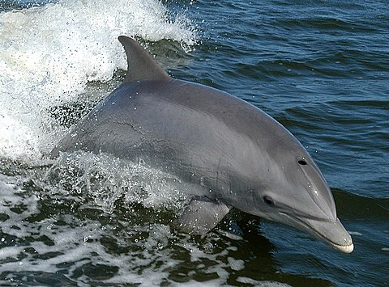

Рассмотрим некоторых представителей этой категории.
Афалина.
Вид дельфинов, один из трёх видов рода афалин (Tursiops) наряду с индийской афалиной (Tursiops aduncus) и австралийской афалиной (Tursiops australis).

Stenella attenuata.
Имеет длинную тонкую морду, чёрную спину, белый живот и горло. Длина новорожденного детёныша 80—90 см, в то время как взрослые особи достигают 2,5 метров в длину и весят 120 кг. Проявляет сильный полиморфизм в размерах и окраске. Самая значительная разница между прибрежными и пелагическими популяциями. Прибрежные формы больше и более пятнистые. Половая зрелость достигается в 10 лет у самок и 12 лет у самцов. Они живут около 40 лет.